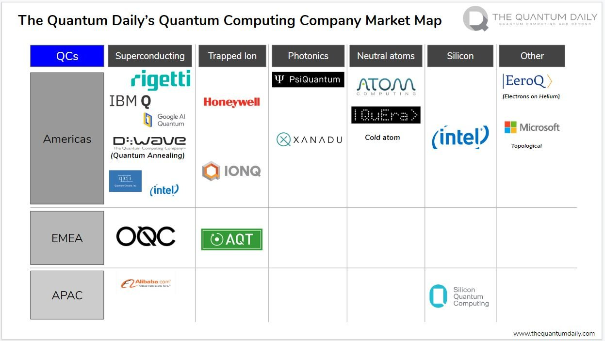
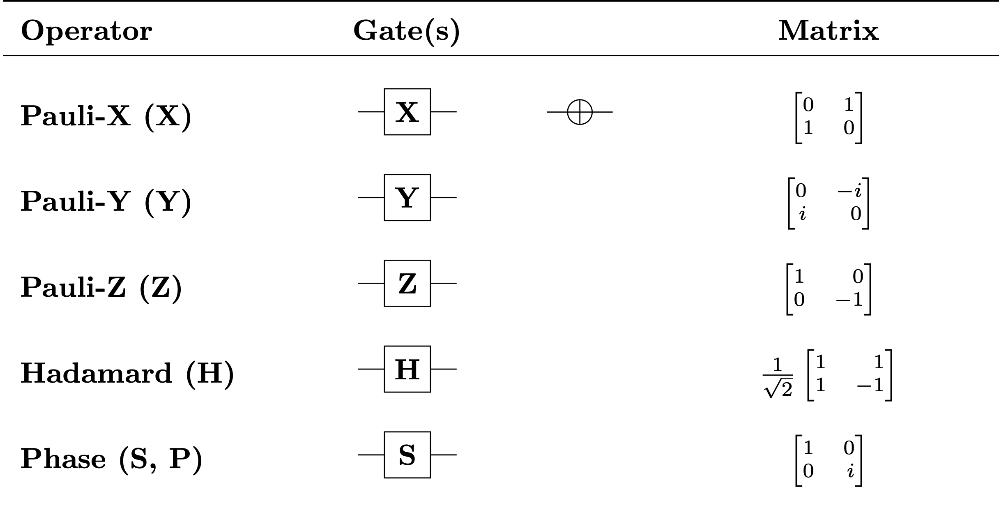
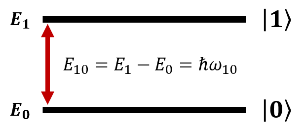
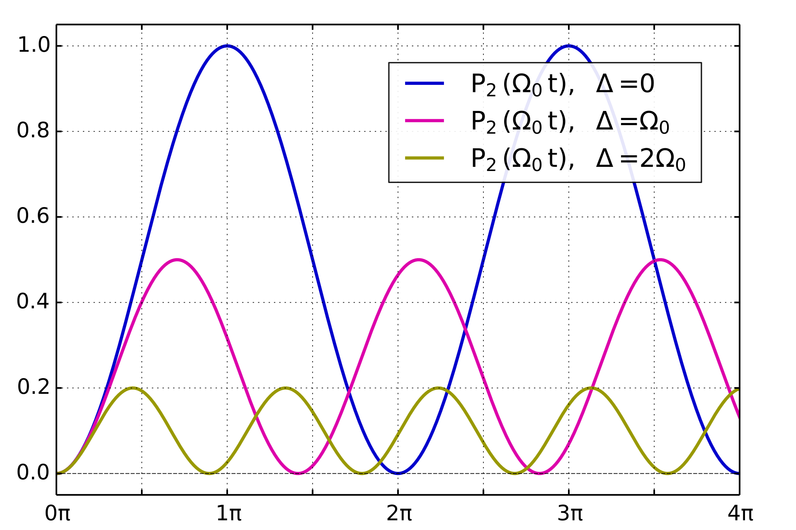
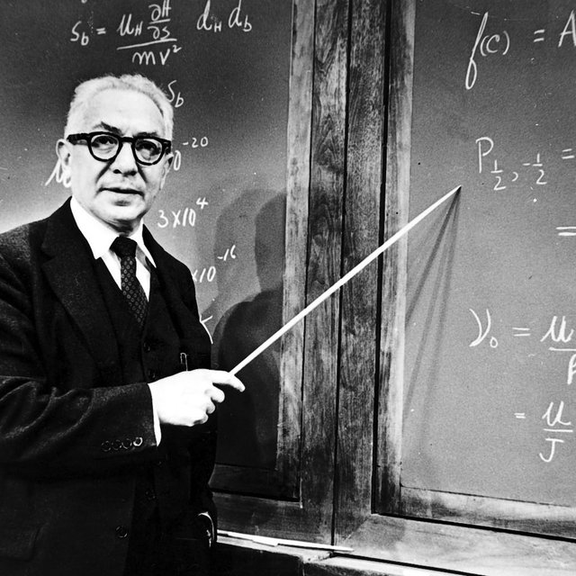

Implementing Quantum Gates
Introdution
在前文當中，我們已經討論和分析了很多利用量子電腦所發展出來的量子演算法，利用量子的特性，疊加態(superposition)、糾纏態(entanglement)、干涉性(phase interference)，展現出在特定問題當中比起傳統計算有更優越的時間複雜度。

在這些演算法當中所提及的量子電路(Quantum circuit)，使用的量子位元(Qubit)、量子閘(Quantum Gate)，來建構量子演算法，是無法利用傳統的計算機的閘門來模擬和計算。因此為了實現量子演算法，我們必須使用低微度系統擁有量子特性的粒子(electron, nucleus, photon)或是系統(superconductor)來操作形成Qubit，而目前主流的技術有Superconductor, Trapped ion, Photonic, Quantum dots, Silicon...

那在這些技術當中，所使用的只是不同的量子系統，但都是將這些量子控制在兩個狀態(state)當中($\left|0\right\rangle ,\left|1\right\rangle $)，以作為並代表傳統位元當中的0和1。在低微度的狀態系統會形成兩個state，並分別擁有各自的能量$E_0,E_1$。而量子的特性讓我們能有疊加態，因此帶有比傳統位元更多的資訊
\[\left|\varphi \right\rangle =a\left|0\right\rangle +b\left|1\right\rangle \]
接下來本文會介紹在這樣的二能階系統(two level system)，我們是如何作用並實現量子電路當中的閘門(X gate, Z gate, Hadmard gate)

For example
\[X\left|0\right\rangle =\left[ \begin{array}{cc}
0 & 1 \\
1 & 0 \end{array}
\right]\left( \begin{array}{c}
1 \\
0 \end{array}
\right)=\left( \begin{array}{c}
0 \\
1 \end{array}
\right)=\left|1\right\rangle \]
\[X\left|1\right\rangle =\left[ \begin{array}{cc}
0 & 1 \\
1 & 0 \end{array}
\right]\left( \begin{array}{c}
0 \\
1 \end{array}
\right)=\left( \begin{array}{c}
1 \\
0 \end{array}
\right)=\left|0\right\rangle \]
\[Z\left|0\right\rangle =\left[ \begin{array}{cc}
1 & 0 \\
0 & -1 \end{array}
\right]\left( \begin{array}{c}
1 \\
0 \end{array}
\right)=\left( \begin{array}{c}
1 \\
0 \end{array}
\right)=\left|0\right\rangle \]
\[Z\left|0\right\rangle =\left[ \begin{array}{cc}
1 & 0 \\
0 & -1 \end{array}
\right]\left( \begin{array}{c}
0 \\
1 \end{array}
\right)=-\left( \begin{array}{c}
0 \\
1 \end{array}
\right)=-\left|1\right\rangle \]
\[H\left|0\right\rangle =\frac{1}{\sqrt{2}}\left[ \begin{array}{cc}
1 & 1 \\
1 & -1 \end{array}
\right]\left( \begin{array}{c}
1 \\
0 \end{array}
\right)=\frac{1}{\sqrt{2}}\left( \begin{array}{c}
1 \\
1 \end{array}
\right)=\frac{\left|0\right\rangle +\left|1\right\rangle }{\sqrt{2}}\]
\[H\left|1\right\rangle =\frac{1}{\sqrt{2}}\left[ \begin{array}{cc}
1 & 1 \\
1 & -1 \end{array}
\right]\left( \begin{array}{c}
0 \\
1 \end{array}
\right)=\frac{1}{\sqrt{2}}\left( \begin{array}{c}
1 \\
-1 \end{array}
\right)=\frac{\left|0\right\rangle -\left|1\right\rangle }{\sqrt{2}}\]
那要如何操作Qubit，使之能從$\left|0\right\rangle $能像上述的操作變成$\left|1\right\rangle $又或者變成$\frac{\left|0\right\rangle +\left|1\right\rangle }{\sqrt{2}}$等操作呢？簡單來說，我們知道$\left|0\right\rangle ,\left|1\right\rangle $僅僅是不同的能階而已，那不同能階的轉換其實就是躍遷(Quantum transition)！最常見的量子躍遷就是煙火！高能階的電子透過放出光子(photon)，產生可見的電磁波(Electrical magnetic wave)掉落至低能階，形成黑夜中絢麗的光芒。
當然能階也可以從低能階跳到高能階，只要吸收光子，電磁波。所以說我們只要在量子系統中施加電磁波，就可以將$\left|0\right\rangle $躍遷至$\left|1\right\rangle $，但是更有趣的事情是，如果我們能控制電磁波持續的時間，也就是電磁波變成了一個可調變的脈衝(pulse)，$\left|0\right\rangle $不只能躍遷至$\left|1\right\rangle $，還可以形成中間態，也就是我們常見的superposition，形成$\frac{\left|0\right\rangle +\left|1\right\rangle }{\sqrt{2}}$這樣的疊加態！而這也就是說量子閘(Quantum Gate)的物理基礎，本文將會詳細的推導這樣的交互作用以驗證量子閘實現的物理機制。
Prior knowledge: Quantum Mechanic, Time Dependent Perturbation Theory
Interaction between EM wave and 2 Level System
現在我們考慮在有系統能量Hamiltonian，${\hat{H}}_0$條件下形成了一個二能階系統(2 level system)，則由Schrodinger equation 我們可以先有這樣的條件
\[{\hat{H}}_0\left|1\right\rangle =E_1\left|1\right\rangle \]
\[{\hat{H}}_0\left|0\right\rangle =E_0\left|0\right\rangle \]

則在外加小振幅的電磁場$\ \mathop{E}\limits^{\rightharpoonup}$的擾動之下，將會對二能階中的電子產生能量的改變。由於電磁場是個隨時間變化的函數，因此受到此微擾的系統波函數$\left|\varphi \right\rangle $也將會因此隨時間改變。為了瞭解系統中在EM wave 擾動後的系統狀態，我們必須求解時間相依微擾的薛丁格方程式(Time dependent Perturbation theory)。
在受到電磁場的微擾作用下，電子會受到一個新的能量變化，先寫出電磁場的方程式
\[\mathop{E}\limits^{\rightharpoonup}=E_0{cos \left(k\mathop{r}\limits^{\rightharpoonup}-\omega t\right)\ }\hat{r}\]
其中因為我們所使用的電磁波波長相較於原子半徑極小，因此電子在原子內所感受到的電場可以視為不隨空間改變，因此可以簡寫成
\[\mathop{E}\limits^{\rightharpoonup}=E_0{cos \left(\omega t\right)\ }\hat{r}\]
則電子所感受的外加能量微擾$\hat{H}'$
\[{\hat{H}}'=-eV=-e\mathop{E}\limits^{\rightharpoonup}\cdot \mathop{x}\limits^{\rightharpoonup}=-e{xE}_0{cos \left(\omega t\right)\ }\]
也就是說我們系統的完整能量$\hat{H}$就是原本能階的${\hat{H}}_0$加上電磁波微擾後的${\hat{H}}'$
\[\hat{H}={\hat{H}}_0+{\hat{H}}'\]
現在我們重新考慮我們原本的系統的state波函數$\left|{\varphi }_0\right\rangle $，即是兩個狀態$\left|0\right\rangle $以及$\left|1\right\rangle $的線性組合
\[\left|{\varphi }_0\left(t\right)\right\rangle ={\tilde{a}}_0\left|0\right\rangle +{\tilde{a}}_1\left|1\right\rangle =a_0e^{-\frac{iE_0}{\hslash }t}\left|0\right\rangle +a_1e^{-\frac{iE_1}{\hslash }t}\left|1\right\rangle \]
若是帶入Schrodinger equation
\[i\hslash \frac{d}{dt}\left|{\varphi }_0\right\rangle =\left({\hat{H}}_0+{\hat{H}}'\right)\left|{\varphi }_0\right\rangle \]
\[i\hslash \left({\dot{a}}_0e^{-\frac{iE_0}{\hslash }t}\left|0\right\rangle +{\dot{a}}_1e^{-\frac{iE_0}{\hslash }t}\left|0\right\rangle -\frac{iE_0}{\hslash }a_0e^{-\frac{iE_0}{\hslash }t}\left|0\right\rangle -\frac{iE_1}{\hslash }a_1e^{-\frac{iE_1}{\hslash }t}\left|1\right\rangle \right)=E_0a_0e^{-\frac{iE_0}{\hslash }t}\left|0\right\rangle +E_1a_1e^{-\frac{iE_1}{\hslash }t}\left|1\right\rangle +a_0e^{-\frac{iE_0}{\hslash }t}{\hat{H}}'\left|0\right\rangle +a_1e^{-\frac{iE_1}{\hslash }t}{\hat{H}}'\left|1\right\rangle \]
可以發現左式後面兩項可以和右式前兩項相消
\[i\hslash \left({\dot{a}}_0e^{-\frac{iE_0}{\hslash }t}\left|0\right\rangle +{\dot{a}}_1e^{-\frac{iE_0}{\hslash }t}\left|1\right\rangle \right)=a_0e^{-\frac{iE_0}{\hslash }t}{\hat{H}}'\left|0\right\rangle +a_1e^{-\frac{iE_1}{\hslash }t}{\hat{H}}'\left|1\right\rangle \]
為了求解相關係數$a_0,\ a_1$則將上式左右內積$\left|0\right\rangle $
\[i\hslash \left({\dot{a}}_0e^{-\frac{iE_0}{\hslash }t}\langle 0\left|0\right\rangle +{\dot{a}}_1e^{-\frac{iE_0}{\hslash }t}\langle 0\left|1\right\rangle \right)=a_0e^{-\frac{iE_0}{\hslash }t}\left\langle 0\right|{\hat{H}}'\left|0\right\rangle +a_1e^{-\frac{iE_1}{\hslash }t}\left\langle 0\right|{\hat{H}}'\left|1\right\rangle \]
因為正交性的關係 $\left< n \middle| m \right>={\delta }_{n,m}$
\[i\hslash {\dot{a}}_0e^{-\frac{iE_0}{\hslash }t}=a_0e^{-\frac{iE_0}{\hslash }t}\left\langle 0\right|{\hat{H}}'\left|0\right\rangle +a_1e^{-\frac{iE_1}{\hslash }t}\left\langle 0\right|{\hat{H}}'\left|1\right\rangle \]
同理對左右內積$\left|1\right\rangle $
\[i\hslash \dot{a_1}e^{-\frac{iE_1}{\hslash }t}=a_0e^{-\frac{iE_0}{\hslash }t}\left\langle 1\right|{\hat{H}}'\left|0\right\rangle +a_1e^{-\frac{iE_1}{\hslash }t}\left\langle 1\right|{\hat{H}}'\left|1\right\rangle \]
因此我們可以把$a_0,\ a_1$相關係數成矩陣形式
\[i\hslash \frac{d}{dt}\left( \begin{array}{c}
a_0 \\
a_1 \end{array}
\right)=\left( \begin{array}{cc}
V_{00} & V_{01}e^{-\frac{i\left(E_1-E_0\right)}{\hslash }t} \\
V_{10}e^{\frac{i\left(E_1-E_0\right)}{\hslash }t} & V_{11} \end{array}
\right)\left( \begin{array}{c}
a_0 \\
a_1 \end{array}
\right)\]
其中Hamiltonian 相關的內積項習慣簡寫成
\[V_{nm}=\left\langle n\right|{\hat{H}}'\left|m\right\rangle \]
當中的能量差
\[E_1-E_0=\hslash {\omega }_{10}\]
\[i\hslash \frac{d}{dt}\left( \begin{array}{c}
a_0 \\
a_1 \end{array}
\right)=\left( \begin{array}{cc}
V_{00} & V_{01}e^{-i{\omega }_{10}t} \\
V_{10}e^{i{\omega }_{10}t} & V_{11} \end{array}
\right)\left( \begin{array}{c}
a_0 \\
a_1 \end{array}
\right)\]
現在當中我們欲求解$a_0,\ a_1$隨時間的變化，因為只要得到他們就可以得到微擾以後的波函數。上式當中已知$E_0,E_1$，接著我們求出$V_{nm}$就可以進行求解了！
先考慮對角線的部分$V_{00},V_{11}$
\[\left\langle 0\right|{\hat{H}}'\left|0\right\rangle =-eE_0{cos \left(\omega t\right)\ }\int^{\infty }_{-\infty }{{\varphi }^*_0\left(x\right)x{\varphi }_0\left(x\right)dx}=-eE_0{cos \left(\omega t\right)\ }\int^{\infty }_{-\infty }{{\left|{\varphi }_0\left(x\right)\right|}^2xdx}\]
經整理後會發現積分結果就是一個恆正的函數乘上x後做空間積分，那就是一個奇函數的空間積分必定為0
\[\left\langle 0\right|{\hat{H}}'\left|0\right\rangle =-eE_0{cos \left(\omega t\right)\ }\int^{\infty }_{-\infty }{{\left|{\varphi }_0\left(x\right)\right|}^2xdx}=0\]
而非對角線的部分$V_{01},V_{10}$，我們先定義一物理量$\mathit{\Omega}$ (Rabi frequency)
\[\mathit{\Omega}=\frac{eE_0}{\hslash }~\left\langle {\varphi }_0\left|x\right|{\varphi }_1\right\rangle =\frac{eE_0}{\hslash }\left\langle {\varphi }_1\left|x\right|{\varphi }_0\right\rangle \]
則
\[V_{01}=-eE_0{cos \left(\omega t\right)\ }\left\langle {\varphi }_0\left|x\right|{\varphi }_1\right\rangle =-\hslash \mathit{\Omega}{cos \left(\omega t\right)\ }\]
因此我們原本的矩陣方程式可以把以上討論的結果帶入
\[i\hslash \frac{d}{dt}\left( \begin{array}{c}
a_0 \\
a_1 \end{array}
\right)=\left( \begin{array}{cc}
V_{00} & V_{01} \\
V_{10} & V_{11} \end{array}
\right)\left( \begin{array}{c}
a_0 \\
a_1 \end{array}
\right)=\left( \begin{array}{cc}
0 & -\hslash \mathit{\Omega}{cos \left(\omega t\right)\ }e^{-i{\omega }_{10}t} \\
-\hslash \mathit{\Omega}{cos \left(\omega t\right)\ }e^{i{\omega }_{10}t} & 0 \end{array}
\right)\left( \begin{array}{c}
a_0 \\
a_1 \end{array}
\right)\]
將矩陣展開即為
\[\left\{ \begin{array}{c}
{\dot{a}}_0=i\mathit{\Omega}{cos \left(\omega t\right)\ }e^{-i{\omega }_{10}t}a_1 \\
{\dot{a}}_1=i\mathit{\Omega}{cos \left(\omega t\right)\ }e^{i{\omega }_{10}t}a_0 \end{array}
\right.\]
將cos 展開
\[\left\{ \begin{array}{c}
{\dot{a}}_0=\frac{i\mathit{\Omega}}{2}\left(e^{i\left(\omega -{\omega }_{10}\right)t}+e^{-i(\omega +{\omega }_{10})t}\right)a_1 \\
{\dot{a}}_1=\frac{i\mathit{\Omega}}{2}\left(e^{i\left(\omega +{\omega }_{10}\right)t}+e^{-i(\omega -{\omega }_{10})t}\right)a_1 \end{array}
\right.\]
因為我們所施加的電磁波十分接近兩系統的能階差(接近共振)
\[{\omega }_{10}\sim \omega \]
因此$e^{i\left(\omega +{\omega }_{10}\right)t}$和$e^{-i(\omega +{\omega }_{10})t}$震盪快速的部分可以忽略
\[\left\{ \begin{array}{c}
{\dot{a}}_0=\frac{i\mathit{\Omega}}{2}e^{i\left(\omega -{\omega }_{10}\right)t}a_1 \\
{\dot{a}}_1=\frac{i\mathit{\Omega}}{2}e^{-i(\omega -{\omega }_{10})t}a_0 \end{array}
\right.\]
現在定義為小變量$\mathit{\Delta}$
\[\mathit{\Delta}=\omega -{\omega }_{10}=\omega -({\omega }_1-{\omega }_0)\]
\[\left\{ \begin{array}{c}
{\dot{a}}_0=\frac{i\mathit{\Omega}}{2}e^{i\mathit{\Delta}t}a_1 \\
{\dot{a}}_1=\frac{i\mathit{\Omega}}{2}e^{-i\mathit{\Delta}t}a_0 \end{array}
\right.\]
接下來的工作就是要來解這個耦合的微分方程式
Solve of Coupled ODE
首先先將第二式再微分一次
\[{\ddot{a}}_1=\frac{i\mathit{\Omega}}{2}\left(-i\mathit{\Delta}e^{-i\mathit{\Delta}t}a_0+e^{-i\mathit{\Delta}t}{\dot{a}}_0\right)\]
再將一次微分的$a_0$ 反帶回${\dot{a}}_1$，而${\dot{a}}_0$則帶回上式當中以$a_1$表示
\[{\ddot{a}}_1+i\mathit{\Delta}{\dot{a}}_1+\frac{{\mathit{\Omega}}^2}{4}a_1=0\]
那這個常微分二階微分方程式就用一般工程數學的解法即可
Set
\[a_1\left(t\right)=A_1e^{\lambda t}\]
\[A_1{\lambda }^2e^{\lambda t}+i\mathit{\Delta}\lambda A_1e^{\lambda t}+\frac{{\mathit{\Omega}}^2}{4}A_1e^{\lambda t}=0\]
\[{\lambda }^2+i\mathit{\Delta}\lambda +\frac{{\mathit{\Omega}}^2}{4}=0\]
\[\lambda =\frac{-i\mathit{\Delta}\pm \sqrt{{-\mathit{\Delta}}^2-{\mathit{\Omega}}^2}}{2}\]
\[a_1\left(t\right)=A_1e^{\frac{-i\mathit{\Delta}+i\sqrt{{\mathit{\Delta}}^2+{\mathit{\Omega}}^2}}{2}t}+A_2e^{\frac{-i\mathit{\Delta}-i\sqrt{{\mathit{\Delta}}^2+{\mathit{\Omega}}^2}}{2}t}\]
利用initial condition $a_1=0,a_0=1$ (表示一開始的狀態在ground state,$\left|0\right\rangle $)
\[a_1\left(t=0\right)=0=A_1+A_2,\ A_1=-A_2\]
\[a_1\left(t\right)=A_1\left(e^{\frac{-i\mathit{\Delta}+i\sqrt{{\mathit{\Delta}}^2+{\mathit{\Omega}}^2}}{2}t}-e^{\frac{-i\mathit{\Delta}-i\sqrt{{\mathit{\Delta}}^2+{\mathit{\Omega}}^2}}{2}t}\right)=A_1e^{-\frac{i\mathit{\Delta}}{2}t}\left(e^{i\frac{\sqrt{{\mathit{\Delta}}^2+{\mathit{\Omega}}^2}}{2}t}-e^{-i\frac{\sqrt{{\mathit{\Delta}}^2+{\mathit{\Omega}}^2}}{2}t}\right)\]
\[a_1\left(t\right)=2A_1ie^{-\frac{i\mathit{\Delta}}{2}t}{sin \left(\frac{\sqrt{{\mathit{\Delta}}^2+{\mathit{\Omega}}^2}}{2}t\right)\ }\]
現在我們已經解出激發態$\left|1\right\rangle $的係數$a_1\left(t\right)$，但是還是有係數$A_1$仍未知，所以我們得在解出$a_2\left(t\right)$，並利用歸一化的條件得出$A_1$。而$a_2\left(t\right)$的解法我們可以用跟剛剛一樣的分析手法重做一次，當然別忘了一開始的關係式，其實我們只要把$a_1\left(t\right)$做微分就可以得到$a_0\left(t\right)$了！
\[\left\{ \begin{array}{c}
{\dot{a}}_0=\frac{i\mathit{\Omega}}{2}e^{i\mathit{\Delta}t}a_1 \\
{\dot{a}}_1=\frac{i\mathit{\Omega}}{2}e^{-i\mathit{\Delta}t}a_0 \end{array}
\right.\]
這裡我們直接將$a_1\left(t\right)$微分就可以得到 $a_0$
\[\frac{d}{dt}a_1\left(t\right)=2A_1i\left(-\frac{i\mathit{\Delta}}{2}e^{-\frac{i\mathit{\Delta}}{2}t}{sin \left(\frac{\sqrt{{\mathit{\Delta}}^2+{\mathit{\Omega}}^2}}{2}t\right)\ }+e^{-\frac{i\mathit{\Delta}}{2}t}\frac{\sqrt{{\mathit{\Delta}}^2+{\mathit{\Omega}}^2}}{2}{cos \left(\frac{\sqrt{{\mathit{\Delta}}^2+{\mathit{\Omega}}^2}}{2}t\right)\ }\right)=\frac{i\mathit{\Omega}}{2}e^{-i\mathit{\Delta}t}a_0\left(t\right)\]
經過整理移項以後我們可以得到$a_0$
\[a_0\left(t\right)=\frac{4A_1}{\mathit{\Omega}}\left(-\frac{i\mathit{\Delta}}{2}e^{\frac{i\mathit{\Delta}}{2}t}{sin \left(\frac{\sqrt{{\mathit{\Delta}}^2+{\mathit{\Omega}}^2}}{2}t\right)\ }+e^{\frac{i\mathit{\Delta}}{2}t}\frac{\sqrt{{\mathit{\Delta}}^2+{\mathit{\Omega}}^2}}{2}{cos \left(\frac{\sqrt{{\mathit{\Delta}}^2+{\mathit{\Omega}}^2}}{2}t\right)\ }\right)\]
最後我們考慮歸一化條件
\[{\left|a_0\left(t=0\right)\right|}^2+{\left|a_1\left(t=0\right)\right|}^2=1\]
首先先計算第一項的部分，因為$sin(0)=0$，所以這部份就只是0而已
\[{\left|a_1\left(t=0\right)\right|}^2=0\]
那第二項的部分，也是將$t=0$帶入
\[a_1\left(t=0\right)=\frac{4A_1}{\mathit{\Omega}}\left(\frac{\sqrt{{\mathit{\Delta}}^2+{\mathit{\Omega}}^2}}{2}\right)\]
則平方以後的結果
\[{\left|a_1\left(t=0\right)\right|}^2=4A^2_1\frac{{\mathit{\Delta}}^2+{\mathit{\Omega}}^2}{{\mathit{\Omega}}^2}=1\]
所以我們得到剛剛在$a_1\left(t\right)$所未知的$A_1$
\[A_1=\frac{\mathit{\Omega}}{2\sqrt{{\mathit{\Delta}}^2+{\mathit{\Omega}}^2}}\]
那現在我們終於可以把$A_1$在塞回剛剛的$a_1\left(t\right)$
\[a_1\left(t\right)=2A_1ie^{-\frac{i\mathit{\Delta}}{2}t}{sin \left(\frac{\sqrt{{\mathit{\Delta}}^2+{\mathit{\Omega}}^2}}{2}t\right)\ }=\frac{\mathit{\Omega}}{\sqrt{{\mathit{\Delta}}^2+{\mathit{\Omega}}^2}}ie^{-\frac{i\mathit{\Delta}}{2}t}{sin \left(\frac{\sqrt{{\mathit{\Delta}}^2+{\mathit{\Omega}}^2}}{2}t\right)\ }\]
同理
\[a_0\left(t\right)=\frac{4}{\mathit{\Omega}}\frac{\mathit{\Omega}}{2\sqrt{{\mathit{\Delta}}^2+{\mathit{\Omega}}^2}}\left(-\frac{i\mathit{\Delta}}{2}e^{\frac{i\mathit{\Delta}}{2}t}{sin \left(\frac{\sqrt{{\mathit{\Delta}}^2+{\mathit{\Omega}}^2}}{2}t\right)\ }+e^{\frac{i\mathit{\Delta}}{2}t}\frac{\sqrt{{\mathit{\Delta}}^2+{\mathit{\Omega}}^2}}{2}{cos \left(\frac{\sqrt{{\mathit{\Delta}}^2+{\mathit{\Omega}}^2}}{2}t\right)\ }\right)\]
\[a_0\left(t\right)=\frac{-i\mathit{\Delta}}{\sqrt{{\mathit{\Delta}}^2+{\mathit{\Omega}}^2}}e^{\frac{i\mathit{\Delta}}{2}t}{sin \left(\frac{\sqrt{{\mathit{\Delta}}^2+{\mathit{\Omega}}^2}}{2}t\right)\ }+e^{\frac{i\mathit{\Delta}}{2}t}{cos \left(\frac{\sqrt{{\mathit{\Delta}}^2+{\mathit{\Omega}}^2}}{2}t\right)\ }\]
帶回最初我們假設的
\[\left|{\varphi }_0\left(t\right)\right\rangle ={\tilde{a}}_0\left|0\right\rangle +{\tilde{a}}_1\left|1\right\rangle =a_0e^{-\frac{iE_0}{\hslash }t}\left|0\right\rangle +a_1e^{-\frac{iE_1}{\hslash }t}\left|1\right\rangle \]
\[\left|{\varphi }_0\left(t\right)\right\rangle =a_0e^{-\frac{iE_0}{\hslash }t}\left|0\right\rangle +\frac{\mathit{\Omega}}{\sqrt{{\mathit{\Delta}}^2+{\mathit{\Omega}}^2}}ie^{-\frac{i\mathit{\Delta}}{2}t}e^{-\frac{iE_1}{\hslash }t}{sin \left(\frac{\sqrt{{\mathit{\Delta}}^2+{\mathit{\Omega}}^2}}{2}t\right)\ }\left|1\right\rangle \]
則波函數隨時間改變狀態$\left|1\right\rangle $部分的函數為
\[a_1e^{-\frac{iE_1}{\hslash }t}\left|1\right\rangle =\frac{\mathit{\Omega}}{\sqrt{{\mathit{\Delta}}^2+{\mathit{\Omega}}^2}}ie^{-\frac{i\mathit{\Delta}}{2}t}e^{-\frac{iE_1}{\hslash }t}{sin \left(\frac{\sqrt{{\mathit{\Delta}}^2+{\mathit{\Omega}}^2}}{2}t\right)\ }\]
則在電磁波微擾以後測量到state$\left|1\right\rangle $的機率即為
\[|{\left\langle 1\left|{\varphi }_0\left(t\right)\right\rangle \right|}^2={\left(\frac{\mathit{\Omega}}{\sqrt{{\mathit{\Delta}}^2+{\mathit{\Omega}}^2}}ie^{-\frac{i\mathit{\Delta}}{2}t}e^{-\frac{iE_1}{\hslash }t}{sin \left(\frac{\sqrt{{\mathit{\Delta}}^2+{\mathit{\Omega}}^2}}{2}t\right)\ }\right)}^2\]
\[P_{0\to 1}=\frac{{\mathit{\Omega}}^2}{{\mathit{\Delta}}^2+{\mathit{\Omega}}^2}{sin^2 \left(\frac{\sqrt{{\mathit{\Delta}}^2+{\mathit{\Omega}}^2}}{2}t\right)\ }\]
同理由歸一化
\[P_{1\to 0}=\frac{{\mathit{\Omega}}^2}{{\mathit{\Delta}}^2+{\mathit{\Omega}}^2}{{cos}^2 \left(\frac{\sqrt{{\mathit{\Delta}}^2+{\mathit{\Omega}}^2}}{2}t\right)\ }\]
Rabi Oscillation
那我們也可以將上面所推導出測量機率結果針對不同時間長度和$\mathit{\Delta}$的狀況下做圖，可以得到以下在Wikipedia上能看到的圖，這個現象被稱做Rabi Oscillation (Rabi frequency)

Rabi cycle, 是紀念美國科學家Israel Isaac Rabi 致力於研究MRI(nuclear magnetic resonance)核磁共振的結果。核磁共振是利用交互變動的電磁場和電子的自旋交互作用，以得到影像技術，此研究使Rabi 獲得1944年諾貝爾物理獎

以下這部影片非常清楚的描述了能階在受到電磁場作用後的變化情形，可以看到影片中電子的軌域從內殼層狀態，變成疊加態(內外殼層都有電子機率分布)，接著又變成外殼層，最後持續這樣的情形交互作用，這就是Rabi cycle！
Transition Probability
當所選用的電磁波$\omega $十分接近2 levele energy differnece
\[\mathit{\Delta}=\omega -{\omega }_{10}=\omega -\left({\omega }_1-{\omega }_0\right)\sim 0\]
\[P_{0\to 1}={{sin}^2 \left(\frac{\mathit{\Omega}}{2}t\right)\ }\]
當pulse's time length $t=\frac{\pi }{\mathit{\Omega}}$
\[P_{0\to 1}={{sin}^2 \left(\frac{\mathit{\Omega}}{2}\frac{\pi }{\mathit{\Omega}}\right)=1\ }\]
此時若是測量此qubit將會百分之百得到$|1\rangle $的結果
Bloch Sphere
此外我們也可以近一步的去詮釋Qubit所處在的狀態，所以我們將我們剛剛推出來2 level system的state在電磁波作用下的變化
\[\left|{\varphi }_0\left(t\right)\right\rangle =e^{-\frac{iE_0}{\hslash }t}{cos \left(\frac{\mathit{\Omega}}{2}t\right)\ }\left|0\right\rangle +ie^{-\frac{iE_1}{\hslash }t}{sin \left(\frac{\mathit{\Omega}}{2}t\right)\ }\left|1\right\rangle =e^{-\frac{iE_0}{\hslash }t}\left({cos \left(\frac{\mathit{\Omega}}{2}t\right)\ }\left|0\right\rangle +ie^{-\frac{i\left(E_1-E_0\right)}{\hslash }t}{sin \left(\frac{\mathit{\Omega}}{2}t\right)\ }\left|1\right\rangle \right)\]
\[\left|{\varphi }_0\left(t\right)\right\rangle ={cos \left(\frac{\mathit{\Omega}}{2}t\right)\ }\left|0\right\rangle +ie^{-i{\omega }_{10}t}{sin \left(\frac{\mathit{\Omega}}{2}t\right)\ }\left|1\right\rangle \]
那這樣的$\left|0\right\rangle $和$\left|1\right\rangle $空間我們可以用Bloch sphere來描述單一量子位元Qubit的狀態
\[\left|\psi \right\rangle ={cos \left(\frac{\theta }{2}\right)\ }+e^{i\varphi }{sin \left(\frac{\theta }{2}\right)\ }\]
而我們可以用電磁波的長短和頻率來改變$\theta ,\ \varphi $，以達到不同Quantum Gate的作用效果，以得到量子閘作用以後計算新得到的Qubit's state!

Implementing of Quantum Gates
以下我們計算不同脈衝作用下，ground state激發以後的狀態變化
若是我們施加了一個 $\pi -pulse$
\[t=\frac{\pi }{\mathit{\Omega}}\]
\[\left|{\varphi }_0\left(t\right)\right\rangle =e^{-\frac{iE_0}{\hslash }t}{cos \left(\frac{\pi }{2}\right)\ }\left|0\right\rangle +ie^{-\frac{iE_1}{\hslash }t}{sin \left(\frac{\pi }{2}\right)\ }\left|1\right\rangle =i\left|1\right\rangle \]
若是我們施加了一個$\pi /2-pulse$
\[t=\frac{\pi }{2\mathit{\Omega}}\]
\[\left|{\varphi }_0\left(t\right)\right\rangle =e^{-\frac{iE_0}{\hslash }t}{cos \left(\frac{\pi }{4}\right)\ }\left|0\right\rangle +ie^{-\frac{iE_1}{\hslash }t}{sin \left(\frac{\pi }{4}\right)\ }\left|1\right\rangle =\frac{\left|0\right\rangle +i\left|1\right\rangle }{\sqrt{2}}\]
若是我們施加了一個$2\pi -pulse$
\[t=\frac{2\pi }{\mathit{\Omega}}\]
\[\left|{\varphi }_0\left(t\right)\right\rangle =e^{-\frac{iE_0}{\hslash }t}{cos \left(\pi \right)\ }\left|0\right\rangle +ie^{-\frac{iE_1}{\hslash }t}{sin \left(\pi \right)\ }\left|1\right\rangle =-\left|0\right\rangle \]
這裡我們已經展示了在共振頻率之下的不同作用脈衝所得到的不同狀態，可以發現原本處在ground state的$\left|0\right\rangle $在經過不同作用後的脈衝可以得到不同的狀態。而量子計算就是針對Qubit去實施不同的頻率脈衝，最後在做測量以得到量子計算的結果，不同的EM wave便會讓Qubit在Bloch sphere中旋轉角度到不同的狀態。
在看懂本文和相關的推導以後非常推薦可以看一下Veritasium訪問雪梨大學物理系教授Andrea Morellor的量子計算物理實現介紹影片，就可以更清楚理解本文的說明和實際實驗操作的情形！ :)
Rabi cycle是了解量子電腦操作的基礎原理，以上推導及內容為自己參考資料所推導和分析出來，若是有計算錯誤或是詮釋錯誤，十分歡迎指教和討論 ^_^